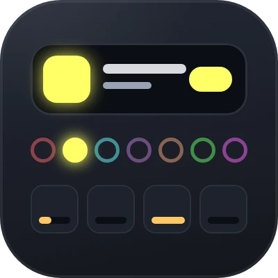
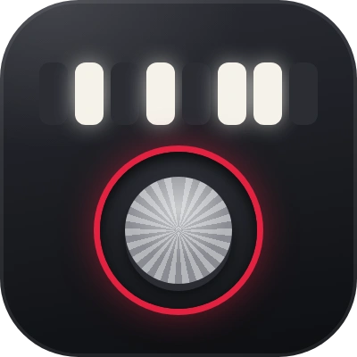
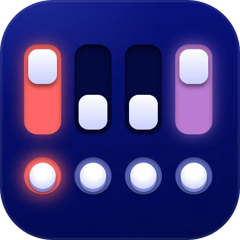
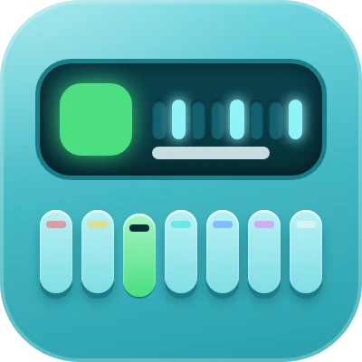

LV2 · MOD Dwarf, Duo, Duo X
SrMouraSilvaPlugins
Utility plugins with a full pedal face and a touch-first settings page.
- Gossiper
- Kill Switch
- Tetr4 Switch
- Hept7 Switch
Utility plugins with a full pedal face and a touch-first settings page.



